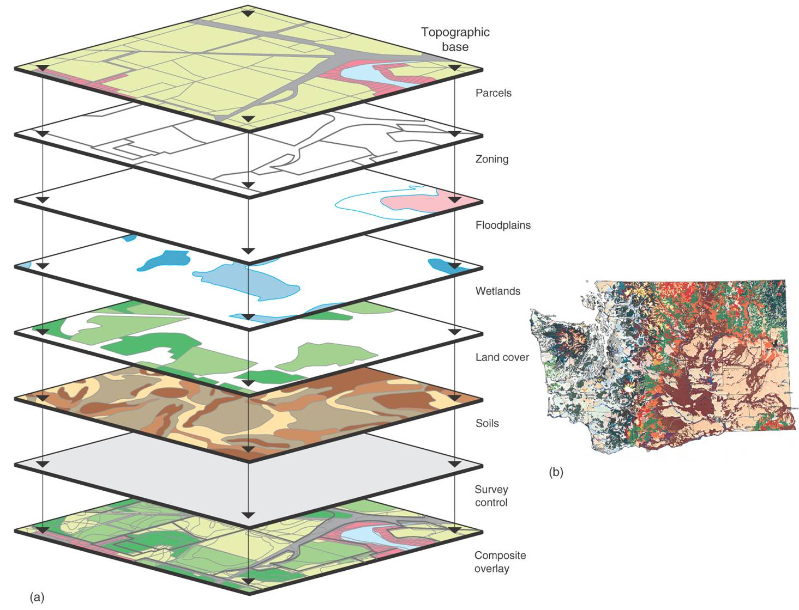

Section 03 Review of statistic basics (I)
Pre-class reading: [RS] p1-22
Prerequisites
Install the following package:
moments
Load the libraries with R:
## Warning: package 'moments' was built under R version 4.0.3Missing Values
Different kinds of missing values
Despite the best laid plans, environmental data often contain missing data. This generally is caused by the following reasons.
Data points are indeed missing. For example, the instrument may be out of service, or some data records are lost.
Observed values are below the instrument detection limit (DL) or limit of detection (LOD). This is often seen for experimental data sets.
Observations are labeled as bad observations. This is usually seen in Remote Sensing data sets.
Handling missing values
As you can see, missing data can arise for all sorts of reasons, the problem is how to deal with it? There are lots of options for dealing with missing data, ranging from simple to complex.
Perhaps the easiest solution is to ignore or delete observations with any missing data (like what just did). This is a luxury we often cannot afford since we may have a small sample size to begin with.
Another option is to replace the missing values with values based on expert prior knowledge. For example, people usually replace values below DL with
0, DL, or half DL. This of course is risky business and should not be done unless under very special circumstances.A final solution is to estimate the missing values using methods of imputation. The simplest of these, and therefore the most commonly used, is to replace the missing value with the mean or median of the variable. The purpose behind this imputation method is to replace the missing value with a value that will no exert any influence on the analysis. There are much more complex methods of imputation, including for example using a statistical model to predict the missing values based on the other variables in the data set. This procedure comes at the cost of using the same data to predict the missing values as we intend to use in our final statistical model. One solution of course is to use a separate set of variables for the imputation than we intend to use in the final model.
Regardless of the method employed, we have to be suspicious of any data set in which a large number of missing values have been replaced. See more from Analysis of Environmental DataConceptual Foundations:Data Exploration, Screening & Adjustments.
Environmental data have unique features
Temporal (time series)
As you can see from the monthly CO2 data, the time series is clearly defined. A time series is a sequence of numerical data points in successive order. Environmental data are usually sampled/stored in various time scales. Can you think about a few examples?
Spatial
Almost all environmental data we have today can be classified as spatial data. Spatial data tells us what is happening where. The data contains geospatial references, such as point coordinates or larger areas, but it actually includes many additional attributes. In this respect, spatial data provides the glue and the context of environmental information, essential for understanding and assessing what is happening.

Multivariate
As you may imagine, it makes sense to measure more than one variable in one experiment. For example, The Atmospheric Tomography Mission (ATom) is a flight campaign that studies the impact of human-produced air pollution on greenhouse gases and on chemically reactive gases in the atmosphere.
So why do we want to do so? What new information we might gain using such multivariate data sets?
Uncertain
Uncertainty refers to a lack of data or an incomplete understanding. Every measurement comes with a certiany uncertainty, which can be quantified by some efforts.
Section Example 1: How many hours do ESE335 student Sleep everyday?
This section starts with a poll. Suppose we want to know: on average how many hours ESE335 students sleep everyday. To do so:
First, each student is assigned with and ID
Second, please think about your answer to the question. We will ask you later.
Now, we will ask 3 answers from you with random drawing.
Population vs sample
From this simple poll, hopefully you have a clear understanding about:
Population. A population is a set of entities from which statistical inferences are to be drawn.
Sample. A sample is a set of data collected and/or selected from a population by a defined procedure. Here we draw samples through simple random sampling.
Statistical sleuthing
Statistics is a common bond supporting all other sciences. It provides standards of empirical proof and a language for communicating scientific results.
The first part is generally referred as Statistical sleuthing, which is the process of using statistical tools to answer questions of interest. It includes:
designing experiments to unearth hidden truths
describing real data using tools based on ideal mathematical models
answering the questions of interest efficiently
verifying that the tools are appropriate
snooping around to see if there is anything more to be learned.
Standard Statistical Terminology
A parameter is an unknown numerical value describing a feature of a probability model. Parameters are indicated by Greek letters.
A statistic is any quantity that can be calculated from the observed data. Statistics are represented by Roman letter symbols.
An estimate is a statistic used as a guess for the value of a parameter. The notation for the estimate of a parameter is the parameter symbol with a hat on it.
Statistics describing a sample
Center
Call the mean() function to compute average.
Spread
The standard deviation is a measure of spread, interpreted as the typical distance between a single number and the set’s average.
In R, standard deviation can be computed with the sd() function.
Skewness
Skewness is a statistical numerical method to measure the asymmetry of the distribution or data set. It tells about the position of the majority of data values in the distribution around the mean value. Distributions can exhibit right (positive) skewness or left (negative) skewness to varying degrees. A normal distribution (bell curve) exhibits zero skewness.
Call the skewness() function in the moments package to compute the skewness.
Kurtosis
Kurtosis is a numerical method in statistics that measures the sharpness of the peak in the data distribution.
Call the kurtosis() function in the moments package to compute the kurtosis.
Other statistics
We have covered many of the summary functions, make sure you understand what the following functions return: median(), range(), max(), min(), var(), IQR(), summary(). Pay attention to data sets containing NA values.

{kind=link}
Section Example 2: Pirates vs. Global Warming
It’s official! The data’s been analyzed, and the true cause of global warming has finally been revealed: a worldwide crisis in declining pirate numbers. Don’t believe me? Well, there’s a graph to prove it.

You can see that as the number of pirates in the world has decreased over the past 130 years, global warming has gotten steadily worse. In fact, this makes it entirely clear that if you truly want to stop global warming, the most impactful thing to do is - become a pirate!
Hope you’re laughing. Unfortunately, this kind of ridiculous and misleading causality is sold wildly every day.
Causal inference and confunding variables
Statistical analysis alone can be used to establish a causal relationship, only if such a relationship is drawn from randomized experiments, but not from observational studies. The difference between randomized and observational studies is that whether the group status of the subjects can or can not be controlled by the investigator.
In an observational study, it is impossible to draw a causal conclusion from the statistical analysis alone, because one can not rule out the possibility that confounding variables are responsible for group differences in the measured outcome. So can you give some confounding variables in the Pirates vs. Global Warming example?
Observational studies are still very useful in research because:
Establishing causation is not always the goal
Establishing causation can be done in other ways
Observations may suggest an association
Hypothesis tests
Briefly, hypothesis tests use data from a sample to infer the value of a population parameter.
The first step in conducting a hypothesis test is to write the hypothesis statements that are going to be tested. For each test, you will have a null hypothesis (H0) and an alternative hypothesis (Ha or H1). In general, the null hypothesis is the one that specifies a simpler state of affairs, typically an absence of an effect.
The next step is to compute the p-value, which is defined as:
Given that the null hypothesis is true, a p-value is the probability that randomization alone leads to a test statistic as extreme or more extreme than the one observed.
Finally, we use the p-value to evaluate statistical significance. If we fail to reject the null hypothesis and there is no evidence to support the alternative hypothesis. These results are said to be not statistically significant. If then we reject the null hypothesis and conclude that there is evidence to support the alternative hypothesis. These results are statistically significant.
The general procedures are summarized:
Write the hypotheses
Construct a randomization distribution under the assumption that the null hypothesis is true
Use the randomization distribution to find the p-value
Decide if you should reject or fail to reject the null hypothesis
State a real-world conclusion in relation to the original research question
In-class exercises
Exercise #1
Can you create a left-skewed sample? Can you repeat we did in the above example?
Exercise #2
One of the most important theorems in all of statistics is called the Central Limit Theorem or the Law of Large Numbers.
It states that given a sufficiently large sample size from a population with a finite level of variance, the mean of all samples from the same population will be approximately equal to the mean of the original population.
Furthermore, as you increase the number of samples and the sample size, the distribution of all of the sample means will approximate a normal distribution even if the original variables themselves are not normally distributed.
Can you demonstrate the two statements using R?